Introduction
Until now, because of the limitations of current algorithms, the use of MPHFs is restricted to scenarios where the set of keys being hashed is relatively small. However, in many cases it is crucial to deal in an efficient way with very large sets of keys. Due to the exponential growth of the Web, the work with huge collections is becoming a daily task. For instance, the simple assignment of number identifiers to web pages of a collection can be a challenging task. While traditional databases simply cannot handle more traffic once the working set of URLs does not fit in main memory anymore[4], the algorithm we propose here to construct MPHFs can easily scale to billions of entries.
As there are many applications for MPHFs, it is important to design and implement space and time efficient algorithms for constructing such functions. The attractiveness of using MPHFs depends on the following issues:
- The amount of CPU time required by the algorithms for constructing MPHFs.
- The space requirements of the algorithms for constructing MPHFs.
- The amount of CPU time required by a MPHF for each retrieval.
- The space requirements of the description of the resulting MPHFs to be used at retrieval time.
We present here a novel external memory based algorithm for constructing MPHFs that are very efficient in the four requirements mentioned previously. First, the algorithm is linear on the size of keys to construct a MPHF, which is optimal. For instance, for a collection of 1 billion URLs collected from the web, each one 64 characters long on average, the time to construct a MPHF using a 2.4 gigahertz PC with 500 megabytes of available main memory is approximately 3 hours. Second, the algorithm needs a small a priori defined vector of 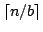 one byte entries in main memory to construct a MPHF. For the collection of 1 billion URLs and using 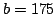, the algorithm needs only 5.45 megabytes of internal memory. Third, the evaluation of the MPHF for each retrieval requires three memory accesses and the computation of three universal hash functions. This is not optimal as any MPHF requires at least one memory access and the computation of two universal hash functions. Fourth, the description of a MPHF takes a constant number of bits for each key, which is optimal. For the collection of 1 billion URLs, it needs 8.1 bits for each key, while the theoretical lower bound is 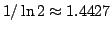 bits per key.
The Algorithm
The main idea supporting our algorithm is the classical divide and conquer technique. The algorithm is a two-step external memory based algorithm that generates a MPHF h for a set S of n keys. Figure 1 illustrates the two steps of the algorithm: the partitioning step and the searching step.
| 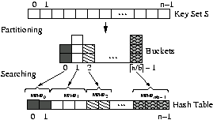 |
| Figure 1: Main steps of our algorithm. |
The partitioning step takes a key set S and uses a universal hash function 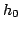 proposed by Jenkins[5] to transform each key 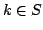 into an integer 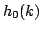. Reducing modulo , we partition S into buckets containing at most 256 keys in each bucket (with high probability).
The searching step generates a MPHF for each bucket i, 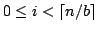. The resulting MPHF h(k), , is given by
| 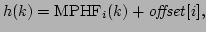 |
where 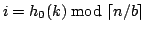. The ith entry offset[i] of the displacement vector offset, , contains the total number of keys in the buckets from 0 to i-1, that is, it gives the interval of the keys in the hash table addressed by the MPHF. In the following we explain each step in detail.
Partitioning step
The set S of n keys is partitioned into , where b is a suitable parameter chosen to guarantee that each bucket has at most 256 keys with high probability (see [2] for details). The partitioning step works as follows:
| 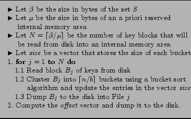 |
| Figure 2: Partitioning step. |
Statement 1.1 of the for loop presented in Figure 2 reads sequentially all the keys of block 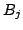 from disk into an internal area of size .
Statement 1.2 performs an indirect bucket sort of the keys in block and at the same time updates the entries in the vector size. Let us briefly describe how is partitioned among the buckets. We use a local array of counters to store a count of how many keys from belong to each bucket. The pointers to the keys in each bucket i, , are stored in contiguous positions in an array. For this we first reserve the required number of entries in this array of pointers using the information from the array of counters. Next, we place the pointers to the keys in each bucket into the respective reserved areas in the array (i.e., we place the pointers to the keys in bucket 0, followed by the pointers to the keys in bucket 1, and so on).
To find the bucket address of a given key we use the universal hash function [5]. Key k goes into bucket i, where
| 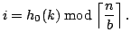 (1) |
Figure 3(a) shows a logical view of the buckets generated in the partitioning step. In reality, the keys belonging to each bucket are distributed among many files, as depicted in Figure 3(b). In the example of Figure 3(b), the keys in bucket 0 appear in files 1 and N, the keys in bucket 1 appear in files 1, 2 and N, and so on.
| 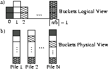 |
| Figure 3: Situation of the buckets at the end of the partitioning step: (a) Logical view (b) Physical view. |
This scattering of the keys in the buckets could generate a performance problem because of the potential number of seeks needed to read the keys in each bucket from the N files in disk during the searching step. But, as we show in [2], the number of seeks can be kept small using buffering techniques. Considering that only the vector size, which has one-byte entries (remember that each bucket has at most 256 keys), must be maintained in main memory during the searching step, almost all main memory is available to be used as disk I/O buffer.
The last step is to compute the offset vector and dump it to the disk. We use the vector size to compute the offset displacement vector. The offset[i] entry contains the number of keys in the buckets 0, 1, ..., i-1. As size[i] stores the number of keys in bucket i, where , we have
| 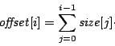 |
Searching step
The searching step is responsible for generating a MPHF for each bucket. Figure 4 presents the searching step algorithm.
| 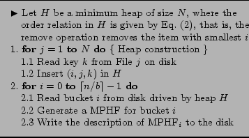 |
| Figure 4: Searching step. |
Statement 1 of Figure 4 inserts one key from each file in a minimum heap H of size N. The order relation in H is given by the bucket address i given by Eq. (1).
Statement 2 has two important steps. In statement 2.1, a bucket is read from disk, as described below. In statement 2.2, a MPHF is generated for each bucket i, as described in the following. The description of MPHF is a vector 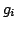 of 8-bit integers. Finally, statement 2.3 writes the description of MPHF to disk.
Reading a bucket from disk
In this section we present the refinement of statement 2.1 of Figure 4. The algorithm to read bucket i from disk is presented in Figure 5.
| Figure 5: Reading a bucket. |
Bucket i is distributed among many files and the heap H is used to drive a multiway merge operation. In Figure 5, statement 1.1 extracts and removes triple (i, j, k) from H, where i is a minimum value in H. Statement 1.2 inserts key k in bucket i. Notice that the k in the triple (i, j, k) is in fact a pointer to the first byte of the key that is kept in contiguous positions of an array of characters (this array containing the keys is initialized during the heap construction in statement 1 of Figure 4). Statement 1.3 performs a seek operation in File j on disk for the first read operation and reads sequentially all keys k that have the same i and inserts them all in bucket i. Finally, statement 1.4 inserts in H the triple (i, j, x), where x is the first key read from File j (in statement 1.3) that does not have the same bucket address as the previous keys.
The number of seek operations on disk performed in statement 1.3 is discussed in [2, Section 5.1], where we present a buffering technique that brings down the time spent with seeks.
Generating a MPHF for each bucket
To the best of our knowledge the BMZ algorithm we have designed in our previous works [1,3] is the fastest published algorithm for constructing MPHFs. That is why we are using that algorithm as a building block for the algorithm presented here. In reality, we are using an optimized version of BMZ (BMZ8) for small set of keys (at most 256 keys). Click here to see details about BMZ algorithm.
Analysis of the Algorithm
Analytical results and the complete analysis of the external memory based algorithm can be found in [2].
Experimental Results
In this section we present the experimental results. We start presenting the experimental setup. We then present experimental results for the internal memory based algorithm (the BMZ algorithm) and for our external memory based algorithm. Finally, we discuss how the amount of internal memory available affects the runtime of the external memory based algorithm.
The data and the experimental setup
All experiments were carried out on a computer running the Linux operating system, version 2.6, with a 2.4 gigahertz processor and 1 gigabyte of main memory. In the experiments related to the new algorithm we limited the main memory in 500 megabytes.
Our data consists of a collection of 1 billion URLs collected from the Web, each URL 64 characters long on average. The collection is stored on disk in 60.5 gigabytes.
Performance of the BMZ Algorithm
The BMZ algorithm is used for constructing a MPHF for each bucket. It is a randomized algorithm because it needs to generate a simple random graph in its first step. Once the graph is obtained the other two steps are deterministic.
Thus, we can consider the runtime of the algorithm to have the form for an input of n keys, where is some machine dependent constant that further depends on the length of the keys and Z is a random variable with geometric distribution with mean 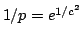. All results in our experiments were obtained taking c=1; the value of c, with c in [0.93,1.15], in fact has little influence in the runtime, as shown in [3].
The values chosen for n were 1, 2, 4, 8, 16 and 32 million. Although we have a dataset with 1 billion URLs, on a PC with 1 gigabyte of main memory, the algorithm is able to handle an input with at most 32 million keys. This is mainly because of the graph we need to keep in main memory. The algorithm requires 25n + O(1) bytes for constructing a MPHF (click here to get details about the data structures used by the BMZ algorithm).
In order to estimate the number of trials for each value of n we use a statistical method for determining a suitable sample size (see, e.g., [6, Chapter 13]). As we obtained different values for each n, we used the maximal value obtained, namely, 300 trials in order to have a confidence level of 95 %.
Table 1 presents the runtime average for each n, the respective standard deviations, and the respective confidence intervals given by the average time the distance from average time considering a confidence level of 95 %. Observing the runtime averages one sees that the algorithm runs in expected linear time, as shown in [3].
| 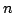 (millions) | 1 | 2 | 4 | 8 | 16 | 32 | |
| Average time (s) | 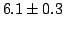 | 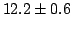 | 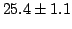 | 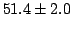 | 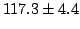 | 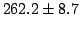 | |
| SD (s) | 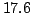 | 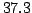 | 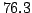 |
| Table 1: Internal memory based algorithm: average time in seconds for constructing a MPHF, the standard deviation (SD), and the confidence intervals considering a confidence level of 95 %. |
Figure 6 presents the runtime for each trial. In addition, the solid line corresponds to a linear regression model obtained from the experimental measurements. As we can see, the runtime for a given n has a considerable fluctuation. However, the fluctuation also grows linearly with n.
| 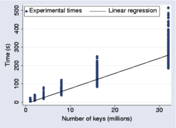 |
| Figure 6: Time versus number of keys in S for the internal memory based algorithm. The solid line corresponds to a linear regression model. |
The observed fluctuation in the runtimes is as expected; recall that this runtime has the form with Z a geometric random variable with mean 1/p=e. Thus, the runtime has mean 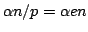 and standard deviation 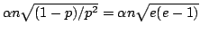. Therefore, the standard deviation also grows linearly with n, as experimentally verified in Table 1 and in Figure 6.
Performance of the External Memory Based Algorithm
The runtime of the external memory based algorithm is also a random variable, but now it follows a (highly concentrated) normal distribution, as we discuss at the end of this section. Again, we are interested in verifying the linearity claim made in [2, Section 5.1]. Therefore, we ran the algorithm for several numbers n of keys in S.
The values chosen for n were 1, 2, 4, 8, 16, 32, 64, 128, 512 and 1000 million. We limited the main memory in 500 megabytes for the experiments. The size of the a priori reserved internal memory area was set to 250 megabytes, the parameter b was set to 175 and the building block algorithm parameter c was again set to 1. We show later on how affects the runtime of the algorithm. The other two parameters have insignificant influence on the runtime.
We again use a statistical method for determining a suitable sample size to estimate the number of trials to be run for each value of n. We got that just one trial for each n would be enough with a confidence level of 95 %. However, we made 10 trials. This number of trials seems rather small, but, as shown below, the behavior of our algorithm is very stable and its runtime is almost deterministic (i.e., the standard deviation is very small).
Table 2 presents the runtime average for each n, the respective standard deviations, and the respective confidence intervals given by the average time the distance from average time considering a confidence level of 95 %. Observing the runtime averages we noticed that the algorithm runs in expected linear time, as shown in [2, Section 5.1]. Better still, it is only approximately 60 % slower than the BMZ algorithm. To get that value we used the linear regression model obtained for the runtime of the internal memory based algorithm to estimate how much time it would require for constructing a MPHF for a set of 1 billion keys. We got 2.3 hours for the internal memory based algorithm and we measured 3.67 hours on average for the external memory based algorithm. Increasing the size of the internal memory area from 250 to 600 megabytes, we have brought the time to 3.09 hours. In this case, the external memory based algorithm is just 34 % slower in this setup.
| (millions) | 1 | 2 | 4 | 8 | 16 |
| Average time (s) | 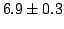 | 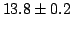 | 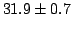 | 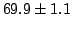 | 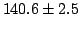 |
| SD | 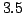 | ||||
| (millions) | 32 | 64 | 128 | 512 | 1000 |
| Average time (s) | 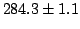 | 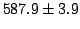 | 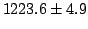 | 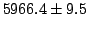 | 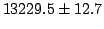 |
| SD | 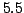 | 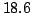 | |||
| Table 2:The external memory based algorithm: average time in seconds for constructing a MPHF, the standard deviation (SD), and the confidence intervals considering a confidence level of 95 %. |
Figure 7 presents the runtime for each trial. In addition, the solid line corresponds to a linear regression model obtained from the experimental measurements. As we were expecting the runtime for a given n has almost no variation.
| 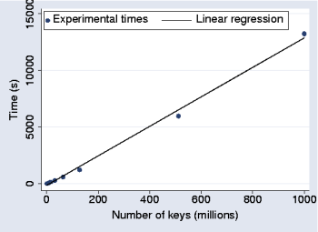 |
| Figure 7: Time versus number of keys in S for our algorithm. The solid line corresponds to a linear regression model. |
An intriguing observation is that the runtime of the algorithm is almost deterministic, in spite of the fact that it uses as building block an algorithm with a considerable fluctuation in its runtime. A given bucket i, , is a small set of keys (at most 256 keys) and, as argued in last Section, the runtime of the building block algorithm is a random variable 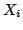 with high fluctuation. However, the runtime Y of the searching step of the external memory based algorithm is given by 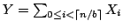. Under the hypothesis that the are independent and bounded, the {\it law of large numbers} (see, e.g., [6]) implies that the random variable 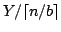 converges to a constant as 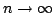. This explains why the runtime of our algorithm is almost deterministic.
Controlling disk accesses
In order to bring down the number of seek operations on disk we benefit from the fact that our algorithm leaves almost all main memory available to be used as disk I/O buffer. In this section we evaluate how much the parameter affects the runtime of our algorithm. For that we fixed n in 1 billion of URLs, set the main memory of the machine used for the experiments to 1 gigabyte and used equal to 100, 200, 300, 400, 500 and 600 megabytes.
Table 3 presents the number of files N, the buffer size used for all files, the number of seeks in the worst case considering the pessimistic assumption mentioned in [2, Section 5.1], and the time to generate a MPHF for 1 billion of keys as a function of the amount of internal memory available. Observing Table 3 we noticed that the time spent in the construction decreases as the value of increases. However, for 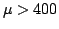, the variation on the time is not as significant as for . This can be explained by the fact that the kernel 2.6 I/O scheduler of Linux has smart policies for avoiding seeks and diminishing the average seek time (see http://www.linuxjournal.com/article/6931).
| (MB) | ||||||
| (files) | ||||||
| (buffer size in KB) | ||||||
| / (# of seeks in the worst case) | ||||||
| Time (hours) |
| Table 3:Influence of the internal memory area size () in the external memory based algorithm runtime. |
Papers
- F. C. Botelho, D. Menoti, N. Ziviani. A New algorithm for constructing minimal perfect hash functions, Technical Report TR004/04, Department of Computer Science, Federal University of Minas Gerais, 2004.
- F. C. Botelho, Y. Kohayakawa, N. Ziviani. An Approach for Minimal Perfect Hash Functions for Very Large Databases, Technical Report TR003/06, Department of Computer Science, Federal University of Minas Gerais, 2004.
- F. C. Botelho, Y. Kohayakawa, and N. Ziviani. A Practical Minimal Perfect Hashing Method. 4th International Workshop on efficient and Experimental Algorithms (WEA05), Springer-Verlag Lecture Notes in Computer Science, vol. 3505, Santorini Island, Greece, May 2005, 488-500.
- M. Seltzer. Beyond relational databases. ACM Queue, 3(3), April 2005.
- Bob Jenkins. Algorithm alley: Hash functions. Dr. Dobb's Journal of Software Tools, 22(9), september 1997.
- R. Jain. The art of computer systems performance analysis: techniques for experimental design, measurement, simulation, and modeling. John Wiley, first edition, 1991.
| Home | CHD | BDZ | BMZ | CHM | BRZ | FCH |
Enjoy!